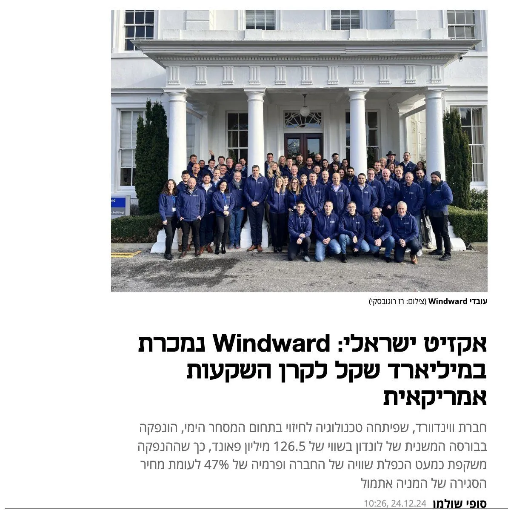

How Windward mapped the open ocean
Originally posted on LinkedIn, January 5, 2025.
About a decade ago, I interviewed at an Israeli startup called Windward. What they had built left me stunned. Technology products do not impress me easily, but this was a work of art: applying technology to a global infrastructure problem.
The company was founded by two friends who had served as naval officers. They identified a gap and combined satellite data, most of it open and available to anyone, to create a live map of ship movements around the world over time. Once a ship travels about 30 km from shore and leaves a country's territorial waters, the sea becomes a black box. Information about ship movements simply does not exist.
I was so impressed by their elegant solution to such a critical problem that I thought the company had to succeed. Global shipping routes have uses across security, logistics, and economics.
I did not get the job, and a lot has happened since. Windward eventually made a huge exit, selling to an American fund for no less than NIS 1 billion. Almost ironically, it happened largely under the radar of the Israeli media.
